1. A Special Baby
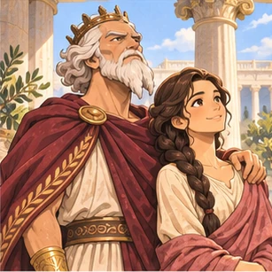
Long ago, in a place called Greece (GREESS), there was a king named Acrisius (uh-KRIZ-ee-us).
He had a beautiful daughter named Danae (DAN-ay-ee).
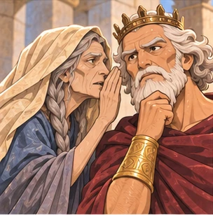
One day, the king heard a scary story from an oracle.
"Your grandson will one day bring you great harm," the oracle said.
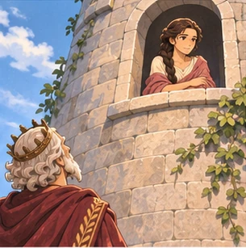
The king was very afraid. He did not want to meet his grandson.
So, he locked Danae (DAN-ay-ee) in a tall tower. No one could go in or out.
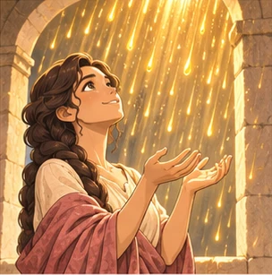
But Zeus (ZOOS), the king of the gods, saw Danae (DAN-ay-ee).
He came to her as golden rain.
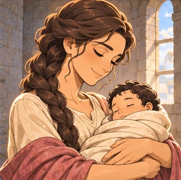
Soon, Danae (DAN-ay-ee) had a baby boy.
She named him Perseus (PUR-see-us).
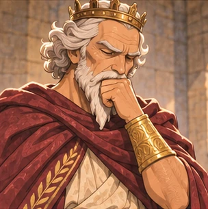
Perseus (PUR-see-us) was special. His father was Zeus (ZOOS), so he was half god and half human.
The king did not know what to do.
2. A Big Trip Across the Sea
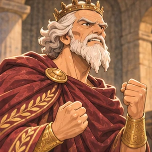
When King Acrisius (uh-KRIZ-ee-us) heard about the baby, he became very angry.
He was afraid that the old story would come true.
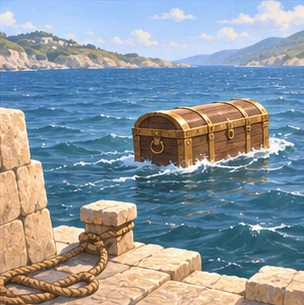
So, he put Danae (DAN-ay-ee) and baby Perseus (PUR-see-us) in a big wooden box.
Then he pushed the box into the sea.
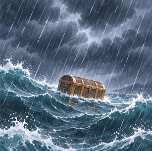
"Oh no! What will happen to us?" Danae (DAN-ay-ee) cried.
The waves moved the box up and down.
The wind blew hard, and the sea was very cold.
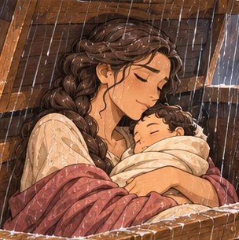
Danae (DAN-ay-ee) held her baby close.
"Do not be afraid, my little one," she said. "I am here with you."
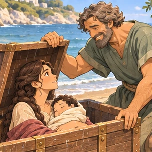
At last, the box reached a small island called Seriphos (SEHR-ih-fohs).
A kind fisherman named Dictys (DIK-tis) found them.
He opened the box and helped them out.
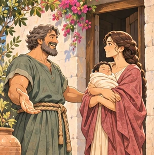
"Come with me," he said. "You can stay at my home."
Danae (DAN-ay-ee) was happy to meet such a kind man.
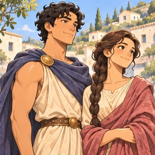
Perseus (PUR-see-us) grew up on the island. He became strong, brave, and kind.
He loved his mother and wanted to keep her safe.
3. A Hard Job From a Bad King
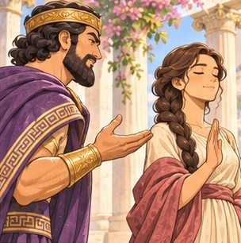
On the island, there was a king named Polydectes (pol-ee-DEK-teez).
He wanted to marry Danae (DAN-ay-ee).
But Danae (DAN-ay-ee) did not want to marry him.
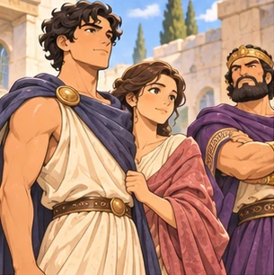
Perseus (PUR-see-us) also did not trust the king.
He always stayed close to his mother.
The king became angry.
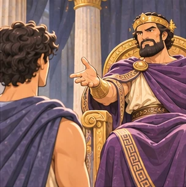
He wanted Perseus (PUR-see-us) to go far away.
One day, he called Perseus (PUR-see-us) to his palace.
"I have a special job for you," said the king.
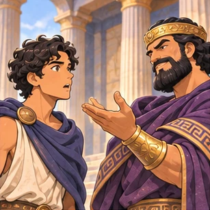
"What is it?" asked Perseus (PUR-see-us).
"Go and bring me the head of Medusa (mih-DOO-suh)!"
Perseus (PUR-see-us) was surprised.
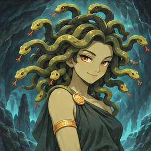
Medusa (mih-DOO-suh) was a very scary monster.
She had snakes instead of hair.
Her eyes had a terrible power.
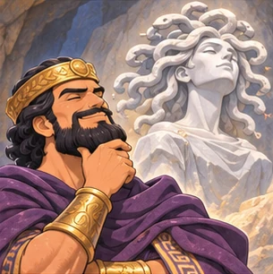
Anyone who looked at her face would turn to stone!
The king smiled. He thought Perseus (PUR-see-us) would never come back.
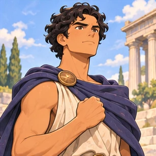
But Perseus (PUR-see-us) stood tall.
"I will do it," he said.
He was afraid, but he did not want the king to hurt his mother.
4. Help From the Gods
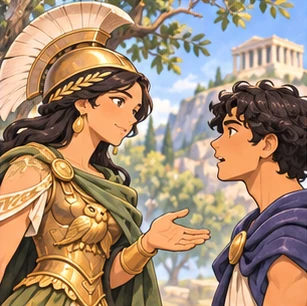
Perseus (PUR-see-us) knew he could not fight Medusa (mih-DOO-suh) alone.
He needed help.
The goddess Athena (uh-THEE-nuh) came to see him.
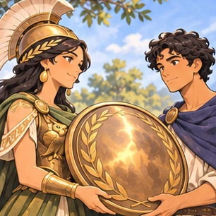
She was wise and strong.
"Perseus (PUR-see-us), you must be careful," she said. "Never look at Medusa's (mih-DOO-suh) face."
She gave him a shiny shield.
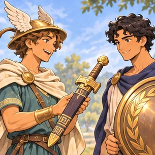
It was so bright that he could see things in it like a mirror.
Then Hermes (HUR-meez), the messenger god, came to help.
He gave Perseus (PUR-see-us) a sharp sword.
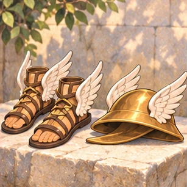
The gods also helped him find some magic tools.
He got winged sandals that could help him fly through the air.
He got a magic hat that could hide him from other people.
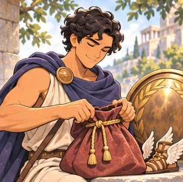
He also got a magic bag to keep Medusa's (mih-DOO-suh) head safe.
Perseus (PUR-see-us) looked at all his new tools.
"Thank you," he said.
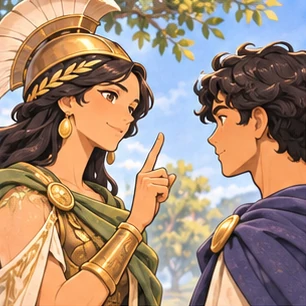
Athena (uh-THEE-nuh) smiled.
"Remember, being strong is not enough. You must also be smart."
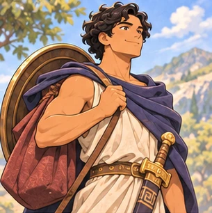
Perseus (PUR-see-us) nodded.
He was ready for his big trip.
5. The Search for Medusa (mih-DOO-suh)
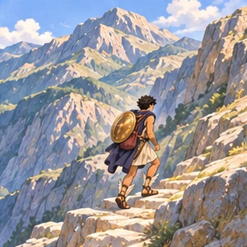
Perseus (PUR-see-us) had a long way to go.
He crossed high mountains and walked through dark places.
He wanted to find Medusa (mih-DOO-suh), but he did not know where she lived.
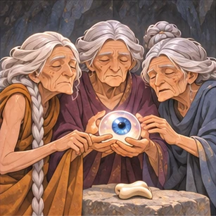
On his way, he met three strange old sisters called the Graeae (GREE-ee).
They shared one eye and one tooth.
They took turns using them.
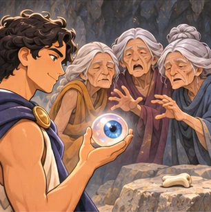
Perseus (PUR-see-us) waited for his chance.
When one sister passed the eye to another, he took it!
"Please tell me where the Gorgons (GOR-gunz) live," he said.
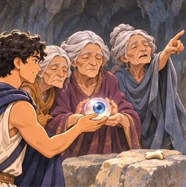
The sisters were afraid.
They told him the way.
Perseus (PUR-see-us) gave their eye back and went on his way.
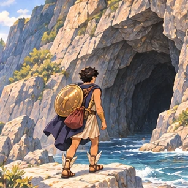
At last, he found a dark cave.
He knew Medusa (mih-DOO-suh) was inside.
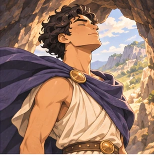
He took a deep breath.
"This is the place," he said.
6. The Fight With Medusa (mih-DOO-suh)
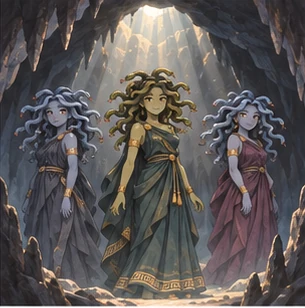
Inside the cave, Perseus (PUR-see-us) saw three monsters.
They were the Gorgons (GOR-gunz).
Two of them could never die.
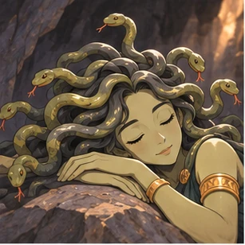
But Medusa (mih-DOO-suh) was different. She could be killed.
She was sleeping on the cold ground.
Her snakes moved slowly around her head.
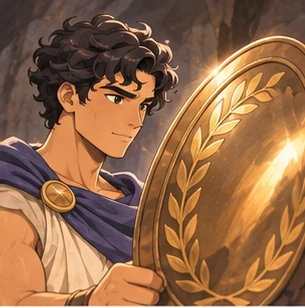
Perseus (PUR-see-us) remembered Athena's (uh-THEE-nuh) words.
"Never look at her face."
He held up his shiny shield.
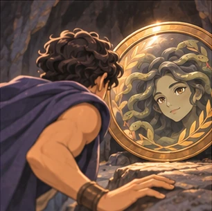
He looked at Medusa's (mih-DOO-suh) face in the shield.
Now he could see where she was without looking at her directly.
Slowly, he moved closer.
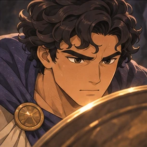
His heart beat fast.
He held his sword tight.
Then, with one quick move, he cut off Medusa's (mih-DOO-suh) head!
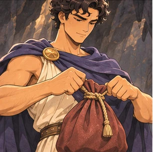
He did it!
Perseus (PUR-see-us) quickly put her head into the magic bag.
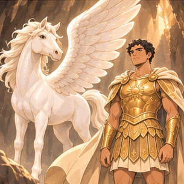
He was very happy, but he knew he had to leave the cave fast.
Something amazing happened next.
From Medusa's (mih-DOO-suh) blood came two new beings: a beautiful flying horse named Pegasus (PEG-uh-sus) and a golden warrior named Chrysaor (krih-SAY-or).
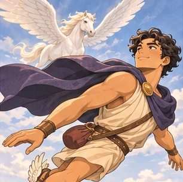
Perseus (PUR-see-us) looked at Pegasus (PEG-uh-sus) in wonder.
Then he flew away with his magic sandals.
7. A Magic Head
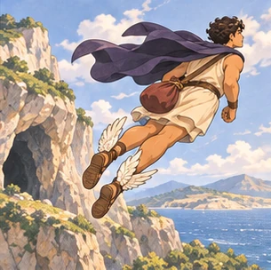
Perseus (PUR-see-us) was now far from the dark cave.
He had finished his hard job.
But Medusa's (mih-DOO-suh) head was still very powerful.
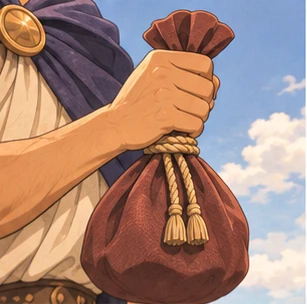
Even after she died, her eyes could turn people into stone.
Perseus (PUR-see-us) kept the head inside his magic bag.
He knew it could help him if he was in danger.
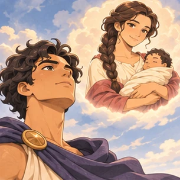
As he flew over the land, he felt tired.
He thought about his mother.
"Is she safe? I hope she is happy," he said.
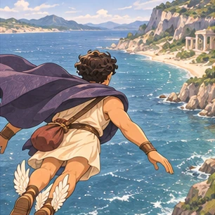
He wanted to go home as soon as he could.
But another adventure was waiting for him.
8. A Girl in Trouble
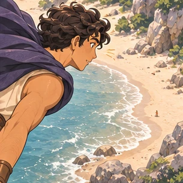
One day, Perseus (PUR-see-us) flew over a beautiful land near the sea.
Then he heard someone crying.
"Help me! Please help me!"
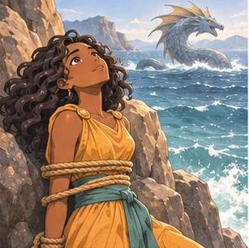
He looked down and saw a young girl tied to a big rock.
Her name was Andromeda (an-DROM-ih-duh).
A huge sea monster was coming toward her.
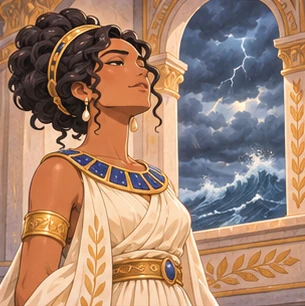
Andromeda's (an-DROM-ih-duh) mother, Queen Cassiopeia (kas-ee-uh-PEE-uh), had once said that she was more beautiful than the sea god's daughters.
The sea gods were angry.
They sent a sea monster to hurt the land.
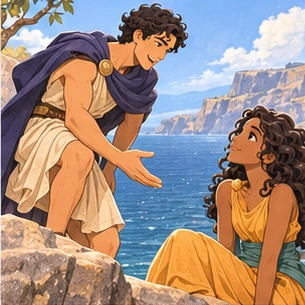
Andromeda (an-DROM-ih-duh) was chosen to be its gift.
Perseus (PUR-see-us) felt sorry for her.
"Do not be afraid! I will help you!" he shouted.
He flew down and fought the sea monster.
He used his sword and his brave heart.
The monster was very big, but Perseus (PUR-see-us) did not give up.
At last, he won the fight.
Andromeda (an-DROM-ih-duh) was free!
"Thank you for saving me," she said.
Perseus (PUR-see-us) smiled.
They became good friends and later got married.
9. Back Home and a Big Surprise
After many adventures, Perseus (PUR-see-us) went back to the island of Seriphos (SEHR-ih-fohs).
He was happy to see his mother again.
But something was wrong.
King Polydectes (pol-ee-DEK-teez) was still there.
He was still trying to make Danae (DAN-ay-ee) marry him.
Perseus (PUR-see-us) became very angry.
"I told you to leave my mother alone!" he said.
The king laughed.
"You are just a young man. You cannot stop me!"
Perseus (PUR-see-us) took the magic bag.
He slowly opened it and showed the king Medusa's (mih-DOO-suh) head.
"Look at this!" he said.
The king looked at the head.
Suddenly, he turned to stone!
All the king's bad men turned to stone, too.
Danae (DAN-ay-ee) was safe at last.
Perseus (PUR-see-us) had kept his promise.
He also made Dictys (DIK-tis) the new king because Dictys (DIK-tis) had been kind to his family.
Perseus (PUR-see-us) was glad to see good things happen to good people.
10. A Sad Surprise
Perseus (PUR-see-us) and Andromeda (an-DROM-ih-duh) lived a happy life together.
One day, Perseus (PUR-see-us) heard about a big sports game.
Many people came to watch.
There were races, games, and a discus throw.
Perseus (PUR-see-us) wanted to join the game.
He picked up a heavy discus.
He held it high and threw it into the air.
But the discus went too far.
It hit an old man in the crowd.
The old man was King Acrisius (uh-KRIZ-ee-us), Perseus's (PUR-see-us) grandfather!
He died from the accident.
Perseus (PUR-see-us) felt very sad.
He never wanted to hurt his grandfather.
But the old story had come true.
Long ago, the king had tried to stop the story from happening.
But he could not stop it.
Perseus (PUR-see-us) learned that some things are not in our hands.
He did not want anyone to get hurt.
He wanted to live a good life and help others.
11. What Can We Learn From Perseus (PUR-see-us)?
Perseus (PUR-see-us) had many hard days.
He met scary monsters.
He went on a long trip.
He had to make hard choices.
But he never gave up.
He also learned that being a hero is not just about being strong.
It is about how we think and how we treat others.
Here are three things we can learn from his story.
1. Be brave.
Perseus (PUR-see-us) was afraid of Medusa (mih-DOO-suh).
But he still tried his best.
We can be brave, too.
We can try new things, even when they feel hard.
2. Think before you act.
Perseus (PUR-see-us) did not look at Medusa's (mih-DOO-suh) face.
He used his shield to stay safe.
A good plan can help us solve a hard problem.
When we have a problem, we can stop, think, and find a smart way to fix it.
3. Help people in need.
Perseus (PUR-see-us) saw Andromeda (an-DROM-ih-duh) in danger.
He did not walk away.
He stopped and helped her.
We can help our friends, family, and people around us.
Even a small kind act can make someone happy.
Remember: A real hero is not just strong. A real hero is brave, smart, and kind!
Let's Talk!
Questions for young readers and teachers
1. About Being Brave
- Was Perseus (PUR-see-us) afraid of Medusa (mih-DOO-suh)?
- What did he do when he felt scared?
- What is something that makes you feel brave?
2. About Being Smart
- Why did Perseus (PUR-see-us) use a shiny shield?
- What would happen if he looked right at Medusa (mih-DOO-suh)?
- Can you think of a time when you solved a problem by thinking first?
3. About Being Kind
- Why did Perseus (PUR-see-us) help Andromeda (an-DROM-ih-duh)?
- Who helped Perseus (PUR-see-us) when he was young?
- How can you help a friend who feels sad?
4. Imagine You Are a Hero!
- Would you like to have magic shoes or a magic shield?
- What kind of monster would you like to meet in a story?
- If you could help one person today, who would it be?
A Little Challenge!
Can you finish these sentences?
- Perseus (PUR-see-us) was brave because __________.
- Athena (uh-THEE-nuh) gave Perseus (PUR-see-us) a __________.
- Medusa (mih-DOO-suh) had __________ instead of hair.
- Perseus (PUR-see-us) saved a girl named __________.
- A good hero should be brave, smart, and __________.
Remember: You do not need magic shoes or a sword to be a hero. You can be a hero every day by being brave, making good choices, and helping others.
THE END